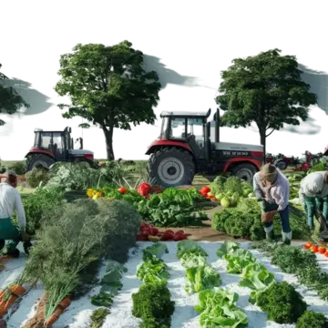

A horta comunitária é um espaço onde os cooperados cultivam verduras e legumes de forma coletiva, dividindo o trabalho e a colheita.
Passo a passo do plantio
- Preparar o solo
- Escolher as sementes
- Plantar nos canteiros
- Regar todos os dias
- Colher no tempo certo
Quem planta sabe esperar, e quem espera sabe colher.
Para aprender mais sobre agricultura sustentável, visite o site da Embrapa.